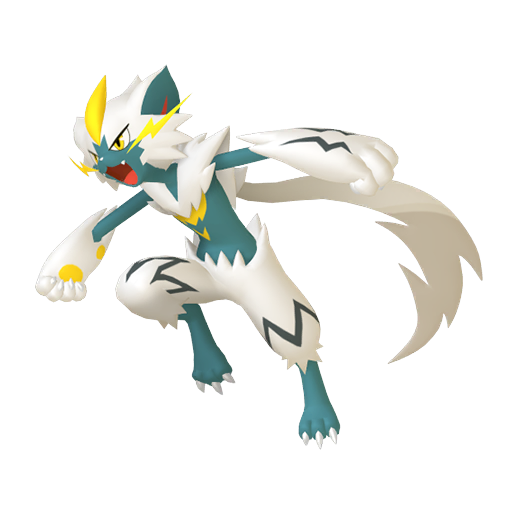
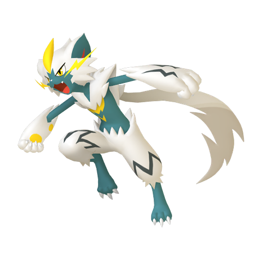

Zeraora's Kingdom
What this server offers:
- 2 gen 8 sysbot
- 2 BDSP sysbots
- Streamers
- We also have multiple bots that can make life easier for you below for your interest
What bots that we provide:
- Nurse joy:Regsters your friend codes for switch,wii,ds and much more
- Myrtwo and obi-wan keno bot are our gen 8 sysbots with your pokemon showdown imports can generate
your pokemon within a few minutes(Must have nintendo online for trading to work)
- Poketwo is a bot that starts your own pokemon adventure with realistic battles,trading,selling and catching pokemon
- Myrto and kiwi the wiki are our BDSP syhsbots which also need nintendo switch online to work
- Zeraora is our server's custom bot that also protects from nuking and raids
- click here to learn how to use the bots